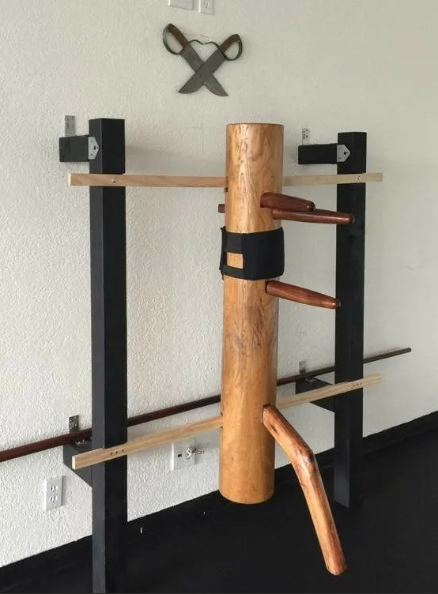

Моё хобби - Вин-чун
Главная
О Вин-чуне
Обратная связь
Вин-чун
 Использует множество боевых техник, по этой причине считается прикладным направлением ушу. Бой в вин-чун основан на принципах, которые постигаются учеником от тренировки к тренировке.